給不確定自己每個月有沒有存到錢的你
三個月後，你不會變成投資高手。
你會變成「掌握自身財務狀況」的人。對於財務決定有判斷，有底氣。
而且第一次諮詢，就讓你的第一筆投資開始扣款。
你不用再學更多理財知識，
只要說出一個「確定做得到」的金額，我們當天就設定好。
每個月帳單付一付、生活費花一花，月底一看，好像什麼都沒留下。
說不出自己現在到底有多少資產、欠多少債。存錢也是有一搭沒一搭，有剩就存，沒剩也就算了。
你想過要開始投資，可是連「這個月能拿多少出來」都不確定，所以一直沒開始。
你查過網路上的教學：六罐子理財法、631 存錢法、先存後花。但執行困難，好像不適合自己。
你缺的不是理財「方法」，
而是沒有先梳理自己的財務現況。
以終為始，先開始投資累積資產，接著學習掌握金流
不用等一切算清楚，直接開始扣款，$1,000 也能開始。
用《財務全貌表》看清楚錢流去哪、你手上到底有哪些資源、又有哪些負債？
資產與負債整體體檢，該調整的地方算 before / after 給你看。
LINE 無限次提問，不用等到下一次諮詢。
我不賣保單、不賣基金。我就是收諮詢費，依照你的狀況給予客製化建議。
不是回家想想，不是下次再說。
是那一個小時裡，就完成。
你說多少，我們就設多少。 1,000 元也可以 那是券商 App 的下限，不是我的下限。
因為我看過太多人：花了錢上課，上課當下超熱血，回到現實卻什麼都沒發生。
原因就是卡在一句話——「我回家盤點一下、算清楚再開始」。
這就是計畫死掉的地方。
在有教練的情況下不行動，回家就更不會行動了。
所以我們反過來做。這套做法我叫它「先跑再算」——先讓行動發生，再回頭把帳算清楚。當你手上有一筆真的在扣的錢，接下來兩次諮詢才有東西可以調整——而不是又一次紙上談兵。
📌 為了讓這件事當天就能完成，報名後我會請你先把證券戶開好，並先填一份簡單的行前準備表單，讓我們第一次碰面就能有成果。
📌「先跑再算」的順序是刻意的：行為先於分析。
先梳理支出再行動的做法，實際上會卡死在「還沒開始記帳」。
每月一次，先開始、中調整、後習慣養成
帶走能用一輩子的財務儀表板
資產負債盤點與優化
不用等到下次諮詢
以下皆為真實學員回饋，已去識別化處理
「諮詢之前覺得自己很沒錢，都不知道錢去哪了。現在會更清楚知道自己的狀況，錢都在哪裡、該怎調配」
「當初加入的目標第一項就是還掉一般房貸，第二次的諮詢中就協助我運用現有資產達成了。心理壓力突然變小」
「很有耐心，講得很詳細，就像跟顧問朋友聊天一樣輕鬆。讓沒信心的理財小白，變成更有底氣去理財」
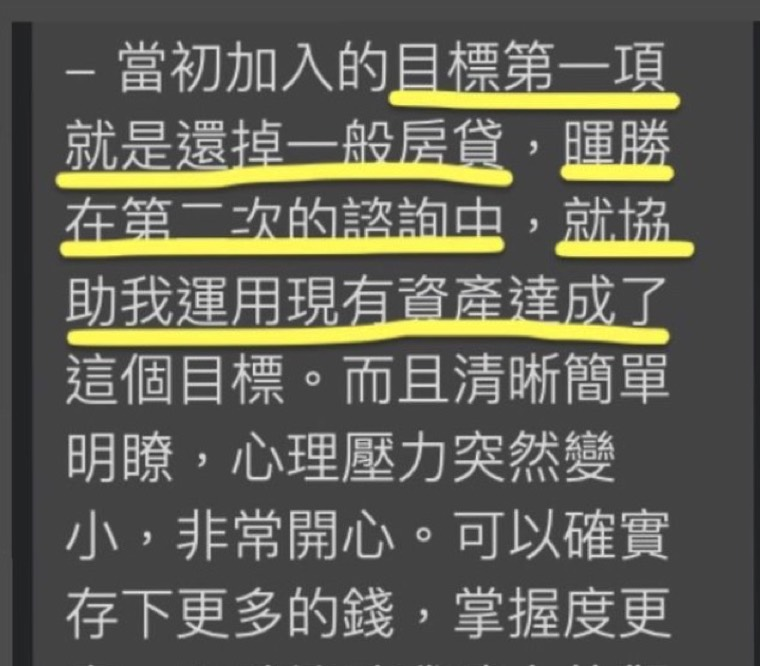
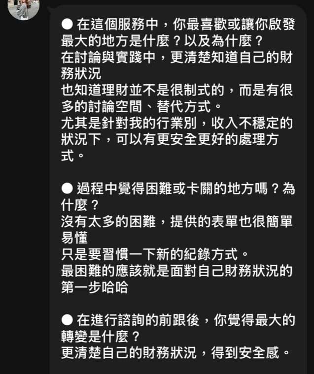
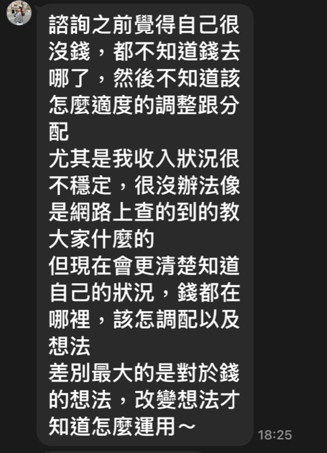
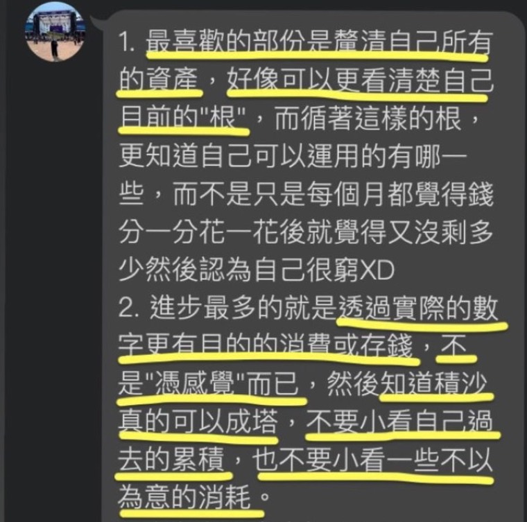
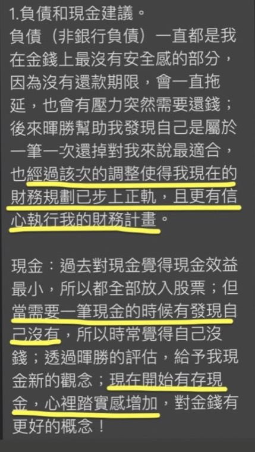
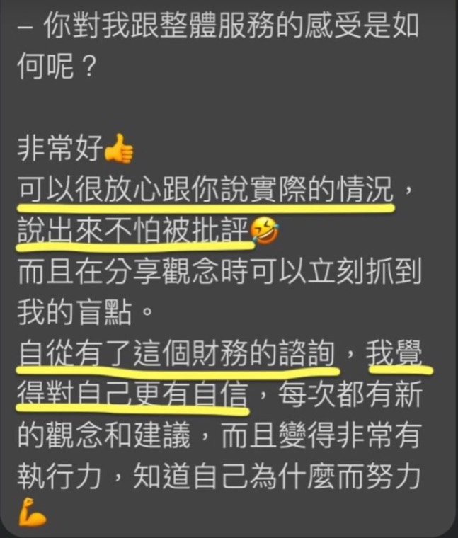
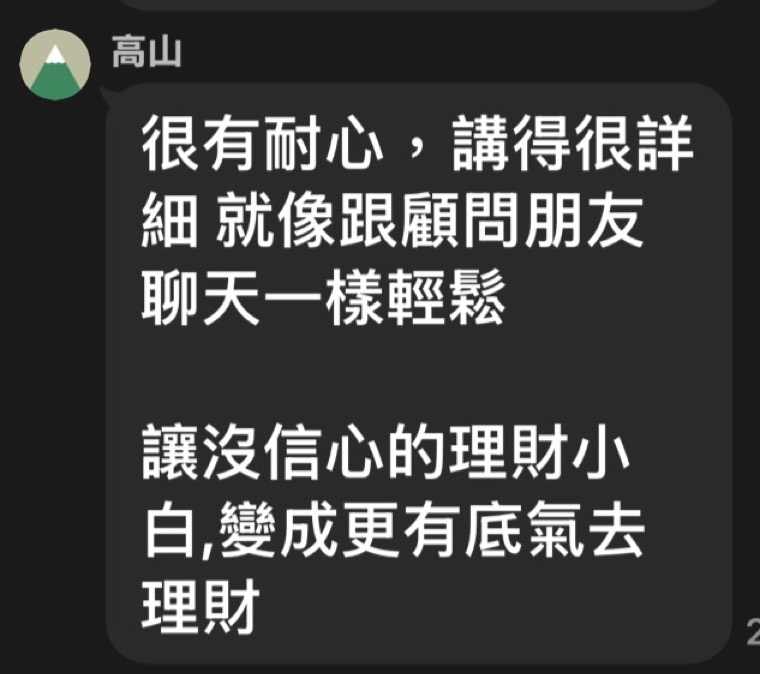
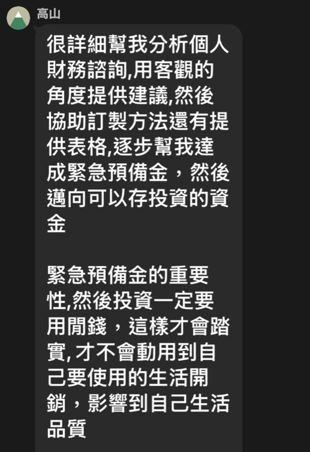
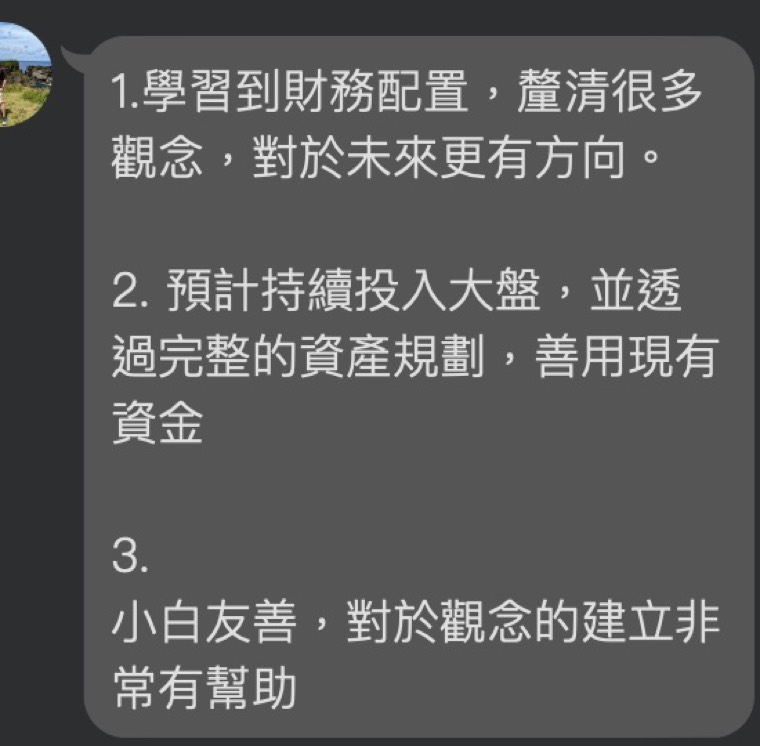
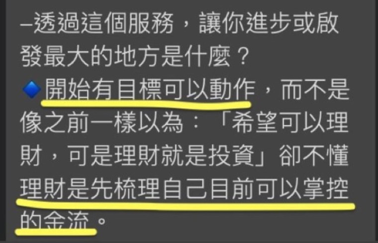
← 左右滑動看更多 →
不是只有「上完課」，是你自己有能力做到這兩件事：
連續三個月，每個月自動扣。不是靠自律，而是建立「我有投資習慣」的身份認同。
知道每個月的錢流去哪、自己的資產負債長什麼樣、緊急預備金該存多少。
這些能力會陪你一輩子。
陪你走三個月的理財教練，分享我走過的路，避開我踩過的坑
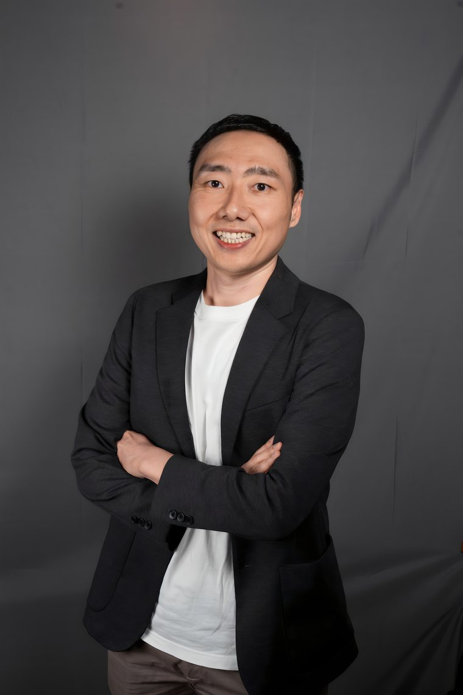
這個計畫不是給所有人的。以下情況，請先不要報名
三個月是把習慣和方法裝備上去，但還不到收成的時間
我們無法使用相同方法，卻期待得到不同結果
這個服務對你太淺
第一次諮詢結束後，如果你覺得這個服務不適合你，
全額退費。
不用解釋理由，也不用覺得不好意思。
先讓行動發生，
再回頭把帳算清楚。
我理解。先講一個我自己整理資料時看到的事——
我訪談過的人裡面，有人花十幾萬上房地產課、有人在期貨和虛擬貨幣賠掉數十萬。上課當下能量都很高，但回到現實之後，多數人沒有任何一件事真的發生。
8,000 元買的不是三小時的知識，是三個月裡真的有人盯著你——中間你隨時可以 LINE 我，不限次數。而且第一次諮詢結束你就會有一筆真的在扣的投資，跟一份開始記錄的表。
如果第一次結束你覺得不值得，全額退費。
恭喜你畢業了，我不會綁著你。你會養成投資習慣、並依照預算執行，時間就會幫你把資產累積。而且你手上會有一份自己看得懂的《財務全貌表》，那是你接下來每一年都還在用的工具。
如果之後你覺得速度不夠快、想要加速，我還有一套進階的做法叫「槓桿接力法」——用低利負債，把未來的錢提早變成今天的本金，讓複利提早開始。
但那個方法有風險，也有門檻。你要先做到兩件事：定期定額連續滿 6 個月不中斷、緊急預備金到位。
到那時候有興趣再來找我就好。